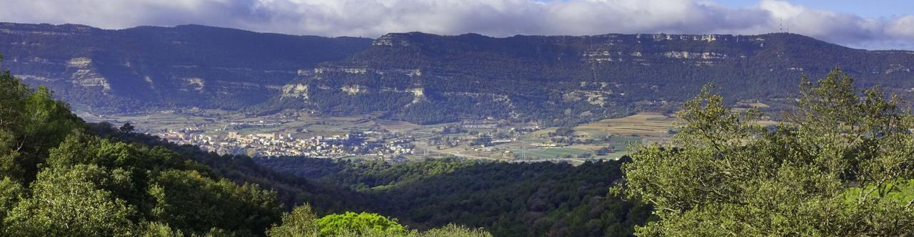

Ruta · Seva
Us proposen una ruta fàcil per fer amb els més petits, on jugar responent preguntes senzilles relacionades amb els castells i alhora descobrir la natura que us envolta. Seguirem el relat de…